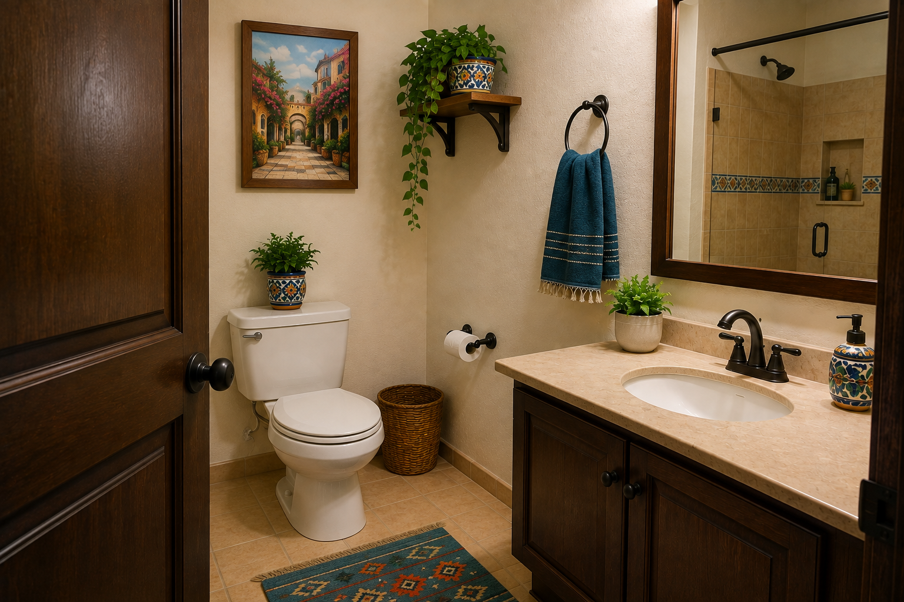
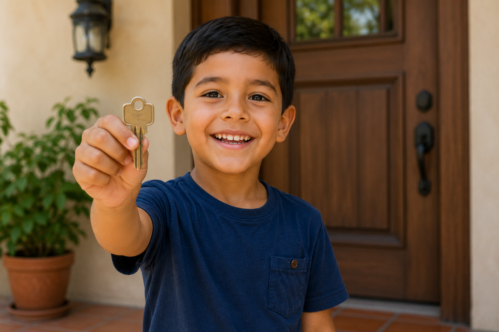
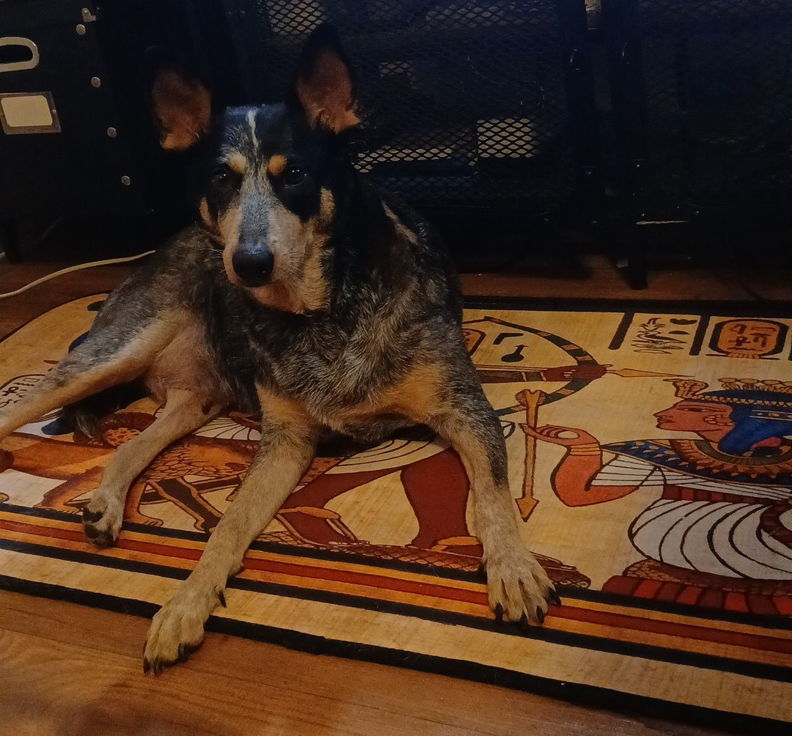

1. Listen & Observe
| Spanish | Pronunciation | English |
|---|---|---|
| Hola (silent "h") | Oh-lah | Hello |
| Spanish | Pronunciation | English |
|---|---|---|
| Hospital (silent "h") | Ohs-pee-tah-l | Hospital |
| Spanish | Pronunciation | English |
|---|---|---|
| Huevo (silent "h") | oo-eh-voh | Egg |
1. J sounds like English H

| Spanish | Pronunciation | English |
|---|---|---|
| José | ho-SEh | Joseph |
| Spanish | Pronunciation | English |
|---|---|---|
| Jaguar | ha-goo-ah-rrh | Jaguar |
3. Ñ Sounds Like “ny”
The letter Ñ sounds like the “ny” sound in canyon.
| Spanish | Pronunciation | English |
|---|---|---|
| Niño | NEE-nyoh | Boy / child |
| Spanish | Pronunciation | English |
|---|---|---|
| Español | ehs-pah-NYOL | Spanish |
| Spanish | Pronunciation | English |
|---|---|---|
| Piña | Pee-nyah | Pineapple |
| Spanish | Pronunciation | English |
|---|---|---|
| Piñata | Pee-nyah-tah | Piñata |

| Spanish | Pronunciation | English |
|---|---|---|
| Baño | Bah-nyoh | Bathroom |
3. Both J & Ñ
| Spanish | Pronunciation | English |
|---|---|---|
| Jalapeño | ha-lah-peh-nyoh | Jalapeño |
4. LL Often Sounds Like Y
In many Spanish accents, LL sounds like the English Y.
| Spanish | Pronunciation | English |
|---|---|---|
| Lluvia | yoo-vee-ah | Rain |

| Spanish | Pronunciation | English |
|---|---|---|
| Llave | yah-veh | Key |
| Spanish | Pronunciation | English |
|---|---|---|
| Llorando | yoh-rahn-doh | Crying |
5. RR is Rolled
The double RR is a stronger rolled R sound.

| Spanish | Pronunciation | English |
|---|---|---|
| Perro | peh-RR-oh | Dog |

| Spanish | Pronunciation | English |
|---|---|---|
| Carro | kah-RR-oh | Car |
6. Accent Marks Show Stress
Accent marks tell you where to place emphasis.
José
ho-SEH
With Accent
Correct stress
Without Accent
Incorrect stress
💡 Spanish Note
Accent marks are important because they can change both the pronunciation and the meaning of a word.
| Word | Meaning |
|---|---|
| papa | potato |
| papá | dad |
| si | if |
| sí | yes |
| el | the |
| él | he / him, depending on context |
| mendigo | beggar |
| méndigo | damn / lousy (informal expression) |
Notice how a small accent mark can completely change the meaning of a word.
For this reason, it is important to pay attention to accent marks when reading and writing Spanish.
Practice Your Pronunciation
Record yourself, then listen to your pronunciation.
Lesson Complete
You learned some of the most important Spanish pronunciation rules.
Next Lesson ➜ Greetings